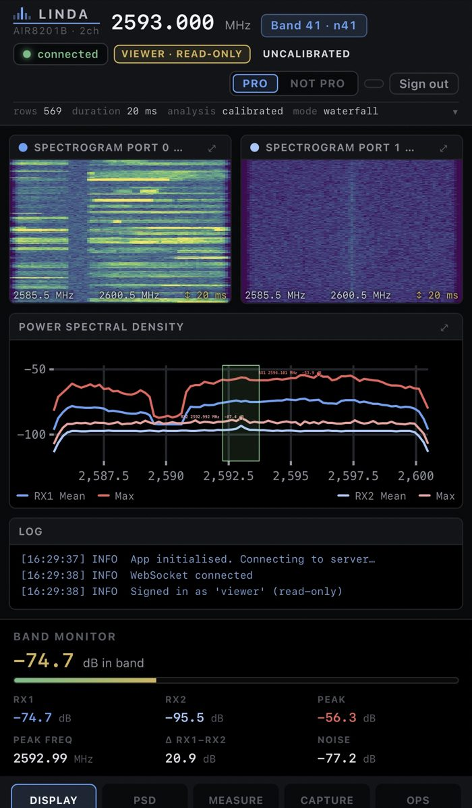
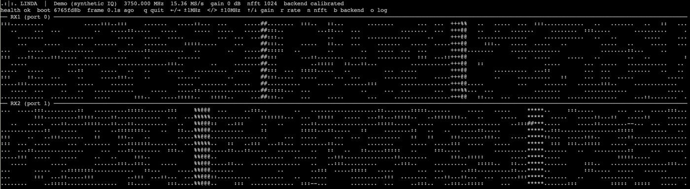

What it is
Researchers studying cellular interference need to see what a software-defined radio is picking up, live, while they're still in front of it. NIST already had striqt, a powerful but complex Python library for radio acquisition and signal analysis. My job was to turn that into something people could actually sit down and use.
LINDA is the result. One server owns the radio and shares the live stream with everyone who connects. You get scrolling spectrogram waterfalls and power spectral density (PSD) plots in a browser, in an SSH terminal, fullscreen on the radio's own display, or through a command-line client. There's also a synthetic demo mode, so you can develop and test without any hardware plugged in.
It's about 38,000 lines of Python, JavaScript, HTML/CSS, and Bash, with about 200 automated tests.


How it's put together
The one rule I held to: all radio, DSP, and configuration logic lives in one place (live/core/, 20 modules). The browser, terminal, kiosk, and CLI are thin wrappers on top of it. Fix a bug once, and it's fixed in all four.
Two threads, one ring buffer
Radios don't wait for you. If you stop draining samples, the hardware buffer overflows and you lose data. So one thread (the Acquirer) does nothing but pull IQ samples into a 4-million-sample ring buffer per channel. No math on that thread at all. A second thread (the Computer) reads from the buffer and builds the spectrograms.
Honest about what it's showing
There are four DSP backends: a dependency-free FFT quicklook, a calibrated striqt spectrogram, striqt PSD with time statistics, and a 5G SSB spectrogram. Every frame that goes to the screen carries a header saying which backend actually ran, the real frequency axis, the FFT size, bin averaging, and hop size. If the SSB backend can't run at your sample rate, it falls back and says so on the label instead of quietly showing you something else.
For periodic signals like 20 ms 5G SSB bursts, there's a capture-and-replay mode (AHAWI) that grabs one long capture, analyzes it in a single striqt pass, and replays it with the bursts lined up so they hold still on screen.
Getting frames to the browser
The web side is FastAPI and uvicorn. Live frames go out over a WebSocket as compact binary messages: a JSON header plus the data, with optional 8-bit quantization that makes them about 4x smaller.
Proving the radio did what you asked
This was the part I cared about most. When you change a setting on a radio, the driver might clamp it, round it, or silently ignore it. A pretty plot of the wrong thing is worse than no plot.
- Readback. After every change, LINDA reads the setting back from the hardware and checks that fresh data frames reflect it. The UI marks each setting as verified, mismatched, or unverified.
- Safe changes. New settings get clamped or snapped to legal values, test-run, and only then applied. If anything fails, it falls back to the last good settings and the stream keeps going.
- Operations audit log. Every change that touches the radio moves through requested, validated, applying, applied, readback, and data-path stages, and ends as SUCCESS, VERIFIED, MISMATCH, UNVERIFIED, or FAILED. You can watch it live in the OPS tab.
- Hardware qualification tool.
hardware_qual.pygoes through the radio's settings one by one and confirms each one actually applies, by reading it back from the hardware.
The audit
Partway through the summer I ran a fidelity audit on the whole pipeline. Basically: is what's on screen actually true? It turned up three real problems:
- a 52 to 103 kHz error in the calibrated frequency axis,
- a slow frame rate on real hardware,
- and an SSB path that didn't work at standard sample rates.
I root-caused them, fixed them, and logged every fix with its verification steps so someone else can check the work. I also went back through the older viewer scripts LINDA replaced and documented 21 bugs, all verified fixed.
Many users, one radio
One server holds the radio and everyone else watches. There are three roles: admin (full control), viewer, and intern (read-only). Sessions use an HMAC-SHA256 signed cookie with the role baked in, so it can't be edited by hand. The first version used a key that could be derived; I caught that with a forged-cookie test and replaced it with a random secret.
LINDA can also transmit (CW, two-tone, chirp, noise) on radios that support it. That's admin-only, you have to acknowledge a legal notice the server actually enforces, and every connected user gets a banner while it's on the air.
On top of that: recording to validated Zarr archives, GPS tagging that records a missing fix as invalid instead of crashing, and live measurements like channel power, occupancy, and a 5G PSS/SSS cell search.
Testing
About 200 pytest functions. They run without a radio or striqt installed, and they also run on the radio host itself. Some of the bigger groups:
| Area | Tests |
|---|---|
| Transmit | 44 |
| Configuration validation | 23 |
| AHAWI capture and replay | 22 |
| Recordings and pull tool | 18 |
| GPS (against a fake gpsd) | 13 |
| Master clock | 11 |
| Finite-capture mode | 11 |
| Operations log | 10 |
| Auth over HTTP with a live demo server | 8 |
| Readback verification | 7 |
One command to deploy
Setting up a radio host used to mean drivers, Python environments, and service files by hand. Now it's one command: install_linda.sh (1,555 lines of Bash, safe to re-run).
- Checks the machine first: root, distro, architecture, Python, disk, port.
- Looks over USB to see which radio is plugged in, then installs only that radio's drivers.
- Pins striqt to the exact version that was verified on the radio.
- Proves the install worked by importing everything, finding the radio, and taking a real capture.
- Sets up the systemd service, logins, and the deployment mode you want: web, kiosk, hotspot, ethernet, or terminal.
The systemd service caps restarts at 10 in 5 minutes. That limit came from a real incident where the service restarted 142 times and kept the radio locked the whole time. There's also an uninstaller that removes only what the installer added.
It runs on Debian, Raspberry Pi OS, and Ubuntu, on x86-64 and ARM64. The main targets are Raspberry Pi with a PlutoSDR and Deepwave AIR-T radios, which run on NVIDIA Jetson.
Radios it supports
Eight SDR families through SoapySDR: Deepwave AIR-T (AIR8201B, AIR7201B, AIR7101B), PlutoSDR, USRP/UHD, RTL-SDR, HackRF, Airspy, bladeRF, and LimeSDR, plus generic SoapySDR devices. Each radio has an adapter that probes its channels, rate limits, and master clock. Getting the master clock right per radio is what fixed a bug that kept a USRP B205mini from opening at all.
How I built it
I built LINDA with AI coding agents, mainly Claude Code and OpenAI Codex. That's stated in the public README. The agents wrote a lot of code fast. My job was the design, deciding what "correct" means for a radio, and reviewing, testing, and editing everything they produced before it shipped. The readback checks, the audit, and the test suite are a big part of how I kept that honest.
Credit. LINDA is NIST software, from the National Institute of Standards and Technology. It was developed in connection with the NIST SURF project "Development of visualization frontends for cellular 5G-NR measurements" and is built on NIST's striqt library. Cite it as: Omran, M. (2026). Live IQ navigation and display application (LINDA) (Version 1.0.2) [Computer software]. National Institute of Standards and Technology. https://doi.org/10.18434/mds2-4290